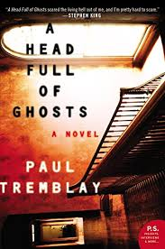
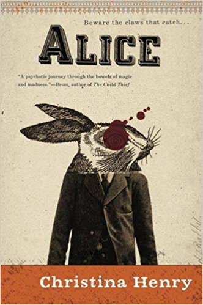
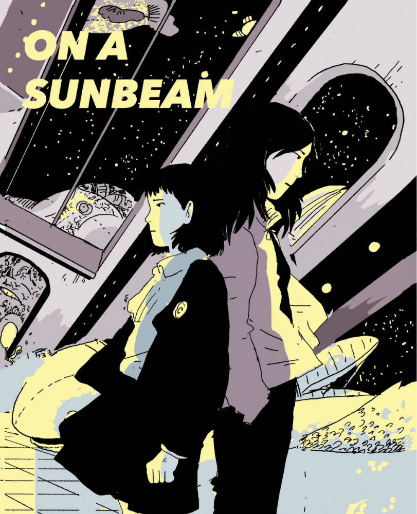

Book Club



What we do
We meet once a week to discuss a book. The book is usually split up between a couple of weeks
so that everyone can keep up with school work as well. We alternate between science fiction
and fantasy books. The group usually meets on Friday 3-5pm but sometimes we meet off
campus as well.
Our first book was The Martian by Andy Weir. We tried getting book club started in late September,
but none of our execs could commit to it. We need someone who can run the book club for the 3 hour stretch,
as well as read the chapters every week, and do research and prep too so they can lead the discussion.
If you're interested in running book club and can commit like 10 hours per week, let us know.